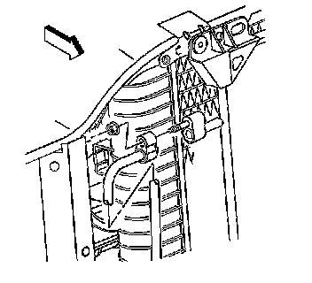

Discharge Hose Replacement (With RPO Codes LY2, LMF, L76 and L92)
DISCHARGE HOSE REPLACEMENT (WITH RPO CODES LY2, LMF, L76 AND L92)
TOOLS REQUIRED
J 39400-A Halogen Leak Detector
REMOVAL PROCEDURE
1. Recover the refrigerant. Refer to Refrigerant Recovery and Recharging . Refrigerant Recovery and Recharging
2. Remove the discharge hose mounting bolt (2) from the A/C compressor.
3. Remove the discharge hose (1) from the A/C compressor.
4. Remove the upper radiator baffle.

5. Remove the discharge hose nut from the condenser.
6. Remove the discharge hose from the condenser.
7. Disconnect the electrical connector from the A/C recirculation switch.
8. Remove the discharge hose from the vehicle.
9. Discard all of the used sealing washers. Cap the system openings.
INSTALLATION PROCEDURE
1. Install the discharge hose (1) to the vehicle.
2. Connect the electrical connector to the A/C recirculation switch.
3. Install the discharge hose to the condenser using new sealing washers.
4. NOTE: Refer to Fastener Notice .
Install the discharge hose nut to the condenser.
Tighten the nut to 16 N.m (12 lb ft).
5. Install the upper air baffle.
6. Install the discharge hose (1) to the A/C compressor using new sealing washers.
7. Install the discharge hose mounting bolt.
Tighten the bolt to 16 N.m (12 lb ft).
8. Evacuate and recharge the A/C system. Refer to Refrigerant Recovery and Recharging . Refrigerant Recovery and Recharging
9. Leak test the fittings of the component using the J 39400-A.